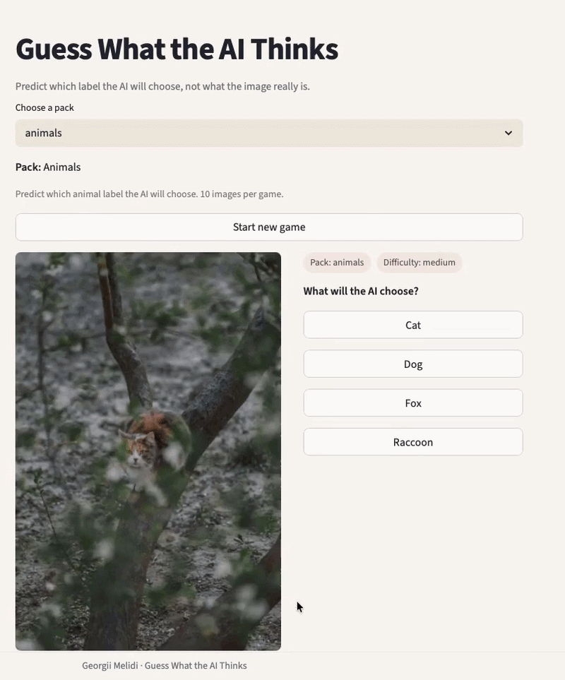
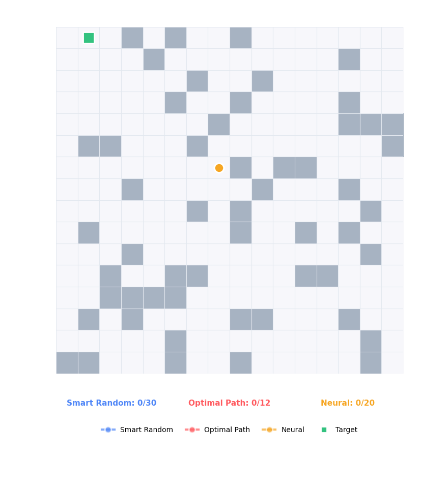
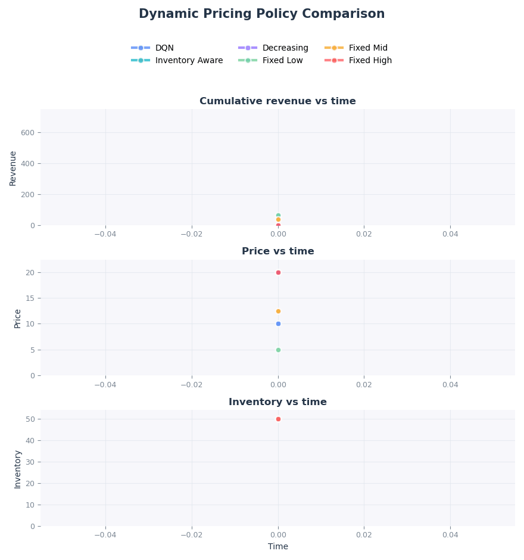

Overview
This page presents selected personal projects in machine learning, reinforcement learning, and algorithmic decision-making. These projects complement my research profile by emphasizing implementation, experimentation, and interactive systems.
Selected Projects
Guess What AI Thinks
A small game built on top of an image classification model.

This project turns an image classification model into a small interactive game, where the player tries to guess what the model will predict for a given image. The goal was to take a standard image classification setup and turn it into something interactive.
Under the hood, the game uses SigLIP (google/siglip2-base-patch16-224). Instead of fixed classes, I define a custom set of labels for each image pack. The model scores each label against the image, the scores are converted into probabilities, and the game shows the top predictions.
- Image classification using SigLIP
- Custom label sets instead of fixed classes
- Scores converted to probabilities for ranking
- Interactive Streamlit app
Tiny Robot Playground
A robot navigation playground to compare different decision strategies.

This project is about a small idea: put a robot in a grid and see how different approaches get it to the goal. The task is straightforward, but the behavior of the policies is very different.
The robot moves in a 2D grid with randomly generated obstacles, and the target is always reachable. You can control the difficulty by changing the grid size, obstacle density, or how far the target is.
- Smart Random: moves randomly but avoids going back immediately
- Optimal Path (BFS): sees the full grid and follows the shortest path
- Neural Policy: only sees locally and is trained via imitation learning (PyTorch)
All policies run on the same grid, so it is easy to compare them using success rate, number of steps, collisions, and reward. The differences become very clear when you watch them side by side.
RL Dynamic Pricing
A reinforcement learning project for sequential pricing under uncertain demand.

This project simulates a simple e-commerce setting where a seller needs to set prices over time. At each step, customers arrive randomly, decide whether to buy depending on the price, and the goal is to maximize total revenue before inventory runs out.
The environment includes time-varying demand (Poisson arrivals), price-dependent conversion (modeled with a sigmoid), and stochastic sales. This makes the problem sequential and uncertain, which is where reinforcement learning becomes useful.
- Custom simulator with stochastic demand and limited inventory
- Deep Q-Network (DQN) for learning pricing policies
- Discrete action space (price grid)
- Comparison with fixed-price and heuristic baselines
In experiments, the learned policy consistently outperforms all baselines by finding a better trade-off between price and conversion. For example, over 50 evaluation episodes, the DQN policy achieves around 678 mean revenue, compared to 625 for a fixed-price baseline.